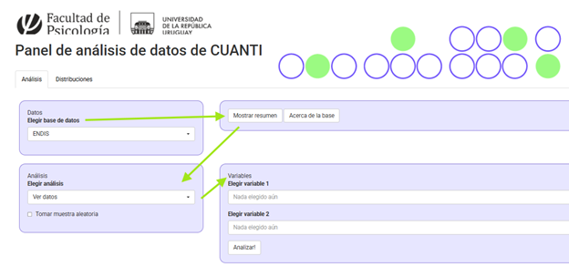

3 Práctico: ¿Por qué estadística?
3.1 ¿Necesito saber estadística si estudio Psicología?
3.1.1 Lectura asociada
3.2 Debate: ¿Necesitamos saber estadística para ser un buen psicólogo/a?
“Como estudiante y futuro profesional de la Psicología necesito formarme en metodología cuantitativa”.
Según el rol que te fue asignado en el debate, sistematiza argumentos a favor/en contra de esta afirmación.
Discute con tus compañeros.
3.3 ¿Cómo funciona el Panel de análisis de datos?

Este Panel tiene integradas una serie de bases de datos nacionales que refieren a temáticas de interés en el campo de la psicología.
- Menú datos: permite seleccionar una de las bases de datos disponibles.
- Acerca de la base: se presenta un texto breve con información de soporte que ayuda a contextualizar los datos que contiene la base.
- Mostrar resumen: Permite visualizar nombres de las variables, su descripción, su tratamiento (tipo de variable) y valores posibles.
3.3.1 Actividad introductoria al Panel
Se te asignará una base de datos. Tu tarea es familiarizarte con ella para presentarla a tus compañeros. Recupera la siguiente información:
- Contexto institucional y temática general
- Muestra
- Variables, instrumentos, informantes
- ¿Qué temáticas crees que se podrían analizar a través de estos datos?
Ahora que sabes un poco más sobre esta base de datos, observa las variables disponibles con mayor detalle. ¿Se te ocurren algunas preguntas/hipótesis de investigación?
Forma un grupo con otros compañeros. Pongan en común lo que sistematizaron respecto a cada base. Acuerden las preguntas de investigación que se podrían plantear a partir de los datos.
¿Necesitas ayuda?
¿Qué tipo de preguntas nos podemos hacer? Considera que en el curso vamos a:
- Aprender a resumir muchos datos a través de unos pocos valores que expresan la tendencia central y la dispersión
- Utilizar gráficos para entender y mostrar algunos aspectos de nuestros datos en forma visual
- Explorar la asociación entre dos variables (considerando dirección y magnitud)
- Comparar grupos distintos, o un mismo grupo en distintas condiciones
3.4 El rol de las variables
Ejercicio: Efectividad de una intervención terapéutica
- Lee el apartado El rol de las variables: predictoras y dependientes del Capítulo 1 del libro.
Un equipo de investigación está evaluando la efectividad de la terapia EMDR (Desensibilización y Reprocesamiento por los Movimientos Oculares) para tratar la ansiedad generalizada. Diseñan un estudio en el que reclutan a 60 personas con diagnóstico de trastorno de ansiedad generalizada. A la mitad de los participantes se les aplicaron 8 sesiones de EMDR, y a la otra mitad, 8 sesiones de terapia cognitivo-conductual (TCC), usada como comparación activa. Antes y después del tratamiento, los participantes completaron un cuestionario estandarizado de ansiedad (por ejemplo, el GAD-7). Además, les piden que califiquen su nivel de malestar percibido en situaciones sociales (de 0 a 10) y su calidad de sueño durante la última semana.
Identificá la/s variable/s predictora/s (independiente/s). ¿Qué manipula o controla el investigador?
Identificá la/s variable/s dependiente/s. ¿Qué se mide como resultado del experimento?
¿Qué otras variables podrían influir en los resultados si no se controlan?
3.5 Ahora que ya calentaste motores, poné a prueba lo que aprendiste sobre tipos de variable y escalas de medida con la lección interactiva
LECCIÓN INTERCATIVA Introducción a la Estadística: Conceptos fundamentales para el análisis de datos
3.6 Y para terminar, un par de ejercicios múltiple opción, como los del parcial
Elige la opción correcta
Sobre las variables cuantitativas
Pueden ser nominales
La altura es un ejemplo de variable discreta
El número de hijos es un ejemplo de variable continua
Las variables continuas pueden tomar cualquier valor de la escala de medición utilizada
Sobre las variables categóricas
La medida ordinal nos informa si un sujeto/objeto posee más o menos de la característica de interés que otro sujeto/objeto
La medida nominal es continua
No hay diferencias cualitativas entre los sujetos/objetos asignados a categorías diferentes
El peso es una variable ordinal
Un equipo de investigación quiere evaluar si practicar meditación guiada antes de rendir un examen reduce el nivel de ansiedad en estudiantes universitarios. Un grupo realiza 15 minutos de meditación antes del examen y un grupo control activo realiza 15 minutos de estiramiento. ¿Cuál es la variable predictora?
Nivel de ansiedad antes del examen
El tipo de actividad previa al examen
Nivel de ansiedad después del examen
Tipo de examen que se rinde